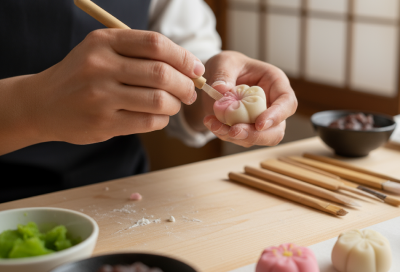
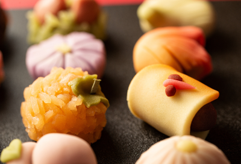
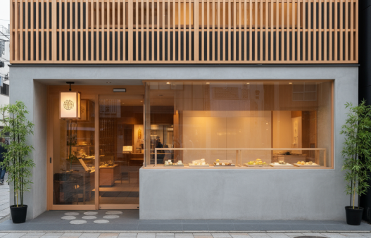

駒込菓舗ことのはについて

和菓子づくりへの想い
「ことのは」という名前には、“言葉の葉”のように、人と人の気持ちをつなぐ存在でありたいという願いを込めました。素材の持ち味をいかし、甘さはやさしく、見た目にも四季を感じられるよう心がけています。
北海道産の小豆を炊いた自家製あんこや、香ばしい皮のどら焼き、ふっくら蒸し上げたくろまんじゅうなど、どのお菓子にも手仕事の温もりがあります。

季節を彩るお菓子たち
定番のどら焼き・カステラ・豆大福のほか、春の桜もち、初夏のよもぎ餅、冬のいちご大福など、季節ごとに限定の和菓子も並びます。
なかでも上生菓子は、その時々の花や風物をかたどったもの。見て楽しく、味わってやさしい、そんなお菓子を目指しています。
店舗情報
駒込菓舗ことのは
所在地 〒113-0021
文京区本駒込3丁目XX-XXX
電話 0120-123-4567
営業時間 11時〜19時
定休日 水曜
JR山手線・東京メトロ南北線「駒込駅」より徒歩約7分
都営三田線「千石駅」より徒歩約10分
都営バス「本駒込三丁目」停留所より徒歩2分

Google Map
駒込菓舗ことのはでは、店頭にてスムーズに受け取りいただけるよう、事前ご注文を受付しております。
下記お問い合わせフォーム、またはお電話にてお気軽にお問い合わせください。
お問い合わせ